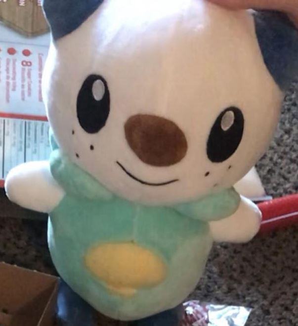

Mr Chubs
Meet Mr.Chubs
Mr.Chubs is Barky's best friend. Mr.Chubs is shy and timid at first, but when he gets comfortable with people, he's quite the talker!
Some of his hobbies include:
- Long walks on the beach
- Reading a good book
- Trolling on Stack Overflow
Life before Barky: I spent my life in a souvenir stores in Chinatown before I was rescued by Vicky
Mr Quackers
Meet Mr.Quackers
Bath time is always tough for Barky, that's why a companion like Mr.Quackers is perfect for Barky to play with while hes getting his monthly bath!
Mr.Quackers has a habit of telling "lame" dad jokes, but they get Barky everytime. Be careful though, once he tells a joke, you'll be laughing for at least a second!
Some of his hobbies include:
- Telling dad jokes
- Swimming in the sink
Favourite joke: The best thing about a Boolean is that even if you are wrong, you are only off by a bit.
Life before Barky: I spent my life being held captive by the SFU Sosy members. They separated me from my family and started giving us away like we were objects. One day, a boy named Johnson rescued me.
Blankie

Meet Blankie
Who better to defend the monsters off in Barky's dreams? Although he's a feisty one, Blankie's got a soft side to him (hehe). One big squeeze of Blankie will make your whole day better!
Besides that, Blankie's best asset is that he's a bit of a stylistic choice.
Get ready to be showered in compliments when you walk around with Blankie. You're definitely the coolest cat in the room when you got Blankie on you.
Some of his hobbies include:
- Keeping up with the latest fashion trends
- Being an Instagram model
Life before Barky: I spent my life in the ABC store at the International Village Mall in Chinatown until I was rescued by Johnson.
Grizz

Meet Grizz
From the TV series "We Bare Bear". *The bears are quite mysterious, there is very few details on them as of right now. Check back another time!
*The description is not an accurate representation of the TV series
Panda
Meet Panda
From the TV series "We Bare Bear". *The bears are quite mysterious, there is very few details on them as of right now. Check back another time!
*The description is not an accurate representation of the TV series
Ice Bear
Meet Ice Bear
From the TV series "We Bare Bear". *The bears are quite mysterious, there is very few details on them as of right now. Check back another time!
*The description is not an accurate representation of the TV series
Osha

Meet Osha
Currently Johnson's trusty little sidekick and Johnson's second favourite plushie (after Barky). Osha works with Johnson in debugging many of Johnson's coding projects.
It doesn't matter how late it gets, Osha is always there to cheer Johnson on and bring him coffee in the morning. With all that time spent on debugging, Osha has become one smart cookie!
Some of his hobbies include:
- Debugging the toughest coding projects
- Working on Leetcode problems
Languages: Python, HTML, CSS, Javascript, Java
Life before Barky: I spent my life in the Amazon Warehouse until Vicky rescued me and introduced me to Johnson.
Johnson

Meet Johnson
Johnson is Barky's best friend besides Vicky. Johnson wears many hats, he is a dad (to Barky), programmer, certified sandwich maker, professional scratcher, and transit system for Barky.
Barky looks up to Johnson, and inspires Barky to be a multi-hat wearer as well! Besides spending time with Barky, you can often find Johnson at the library studying with Osha.
Some of his hobbies include:
- Studying at the library
- Scratching Barky
- Looking for deals
Life before Barky: Not as good as now.
Squishy
Meet Squishy
Need a friend to cry to? Squishy is perfect in this field as he will listen to your problems all day! Lay your head on Squishy and let the tears out because Squishy's got you.
Squishy is not much of a talker but he is a great listener. Currently, Squishy is a licensed therapist but due to Covid-19 he has to work remotely.
Some of his hobbies include:
- Reading books about the human brain and romance novels
- Listening to lofi
- Watching a good Rom Com
Life Before Barky: I spent my life in Miniso before an anonymous person rescued me and introduced me to Vicky.
Josher (Josh)
Honorable Mention: Part-Time Wagon-Pusher
Barky's first wagon pusher. Josher is a hard worker but sometimes he can be a bit mean. Don't worry though, he doesn't mean it, or at least we don't think he does...
Josher is always there to push Barky's wagon up the highest of hills, and when the wagon rolls away, Josher is there to chase after it!
Best line: How does your wagon end up in a tree?!?
Life before Barky: Not as good as now.
Lucas

Honorable Mention: Seasonal Surprise Tickler
Lucas is a great tickler, he's a bit stubborn about giving them but when he does it always catches Barky by well, surprise... Like Josher, Lucas is a bit of a meanie as well,
but that's fine because he makes up for it in tickles!
Best line: *Surprise tickles* I got your foot!
Life before Barky: Not as good as now.
Jesse
Honorable Mention: Full-Time Scratcher
Jesse is a very hard worker. He has been scratching 24/7 for almost 3 years now. Aside from being a hard worker, Jesse is also non judgemental and a great listener so
Barky always feels comfortable sharing his deepest and darkest secrets with Jesse.
Best line: Barky: Are you still scratching? Jesse: I'm always scratching
Life before Barky: Not as good as now.